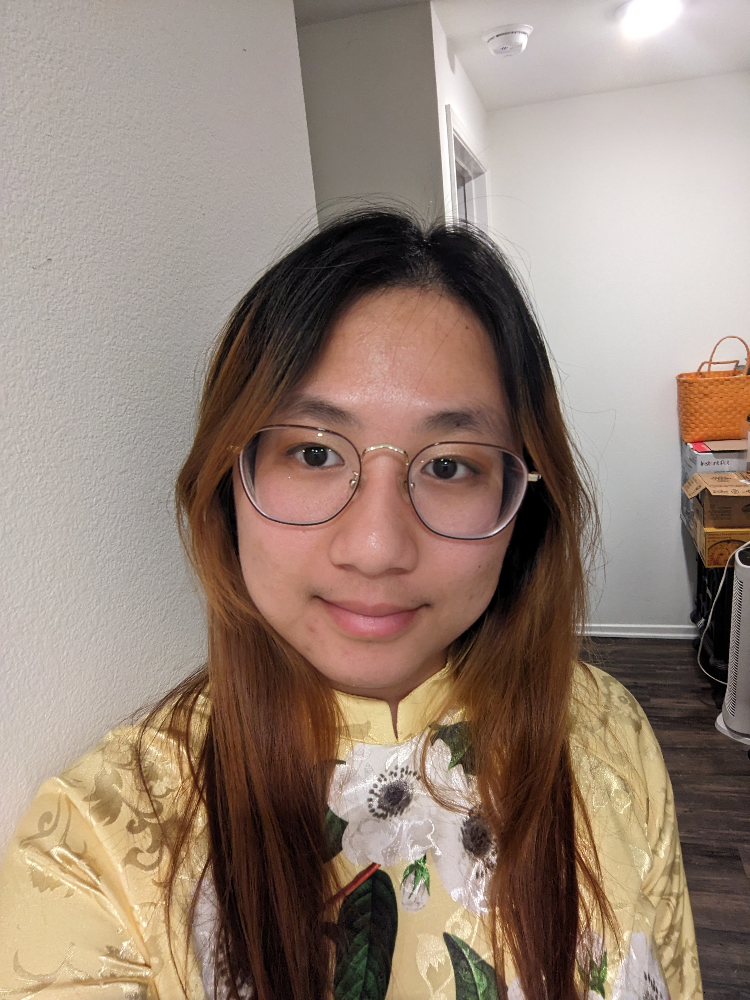
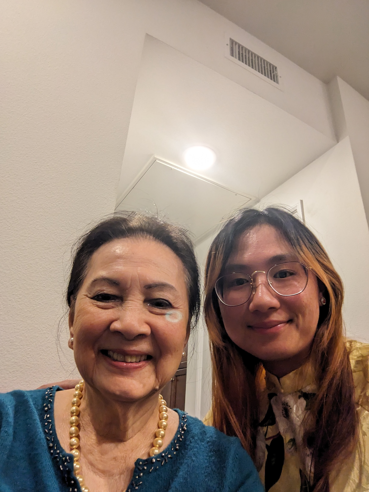

About Me

Hi! Welcome to my Website! I am a graduate student in Cal Poly Pomona in the Biology Department! I am also one of the resident beekeepers here on campus! I love to cook and bake and Dragon Ball!
Education
Cal Poly Pomona: Jason Ear Lab - Pursuing Masters of Science in Biological Sciences
Thesis: Characterizing cell signaling of gene fusion Daple-JAK2 in leukemia cells
Current
Maintain Biosafety Lab 2 Laboratory Space
K562 Cell Culture
Bacterial Transformation
MINI/MIDIprep DNA Purification
Nanophotometer Usage
Cell Growth Media Aliquot
Biosafety Hood Technique
Thesis Level Writing
Cal Poly Pomona: Bachelor of Science in Animal Science
Spring 2023
On Campus Lab Animal Care
Tissue and DNA Sample Collection
Experience
Cal Poly Pomona - BIO 1210L Energy, Matter, and Info Lab Teaching Associate
August 2023 - Present
Tutelage on PCR, Gel Electrophoresis, Micropipetting, Basic Bacterial Transformation
Instruction on basic SOP protocol, formal lab report, and scientific writing
Pedagogy regarding lab techniques, conduct, and lab safety
Cal Poly Pomona - PLT 3360 Bee Science Lab Teaching Associate/Beekeeper
January 2023 - Present
Instruct on managing honey bee behavior through beekeeping tools and techniques
Oversaw campus apiary health through diagnosis and treatment of disease and parasites
Foothill Animal Hospital - Veterinary Assistant
July 2021 - December 2022
Vaccination, cephalic and jugular blood draws, X - Ray, preparation of lab samples
Record of medicine application, patient health status, diet, and exercise
Pre and Post Animal Surgical Care
Motivating College Learners
CITI Biosafety Complete
NIH Recombinant DNA (rDNA) Guidelines
Animal Biosafety
OSHA Bloodborne Pathogens
OSHA Personal Protective Equipment Training
Participating in Vaccine Research
Recipes

Cá Kho
Rub with salt Blanche fish; when boiling add fish, remove fish when shrunken and wrinkled, scrape and wash dirt off fish to remove fishy smell White parts of 9 green onions (as many as you like) 9 garlic cloves Chili if wanted combine green onions, garlic, and chili and crush into a paste combine paste with fish with 1 tablespoon sugar 2 tablespoons fish sauce 1 teaspoon caramel and pepper to cover let marinade for 30 minute
Caramel 3 tablespoons sugar at amber color and foaming, add 4 tablespoons fish sauce off heat (add sugar if too salty; 3 sugar 3 fish sauce, depends how salty fish sauce is) add 1 tablespoon hot water
Turn off heat and add fish add some hot water to get remaining marinade simmer on medium high heat
Goat Curry
4 pounds goat meat: washed, cleaned of excess fat, 2 Teaspoon Salt, Half Cup Vodka Half Onion My Palm’s length of ginger (Three fingers wide, variable if you want) Whole Head of Garlic (minced/mixed with the first two very finely; mix in blender(?) first with onion then garlic+ginger; Vitamix) Marinate goat meat with aromatic blend for 1-2 hours (Better overnight) with Half teaspoon 3 Mixture (3 Cumin, 3 Curry Powder, Two Garam Marsala, 2 Chili Powder: can be tablespoon or teaspoon, just must be in this ratio; no spicy only 1 teaspoon Chili Powder), 1 Teaspoon Sea Salt (must be sea salt) Cashews 50 grams Roasted and Ground Cloves Half Teaspoon (more of this and cinnamon is fine) Cinnamon (2 Finger Width) Bell Pepper Two (Green, cause they smell better, but I guess they can be any color) Evaporated Milk 1 Can (Carnation) 3 Mixture 25 Grams for 4 Pounds or two full teaspoons for cooking Boil/heat water After marinating, sear goat meat in pan on high heat, then move to big pot Toast Cloves and Cinnamon, 2 teaspoons Mixture (3 Cumin, 3 Curry Powder, Two Garam Marsala, 2 Chili Powder: can be tablespoon or teaspoon, just must be in this ratio) low heat, then move in big pot, then move pot to low heat, add half teaspoon when adding to pot The skillet you use to sear the goat meat, after toasting the cloves/cinnamon/Mixture, fill with warm water then move to big pot Get hot water and fill till level with meat Let it sit on high heat till boiling, then lower to low heat, 45 minutes (Put the pot on high heat, wait till it boils, then lower it to low heat, for 45 minutes or till skin is soft) Skim off fat When skin and meat are soft, add in bell pepper, simmer for 10 minutes Mix evaporated milk with ground cashews Add milk cashew mixture after 10 minutes Add two or three curry leaves Let simmer for 15 minutes Done yay
:::
Have a nice day!